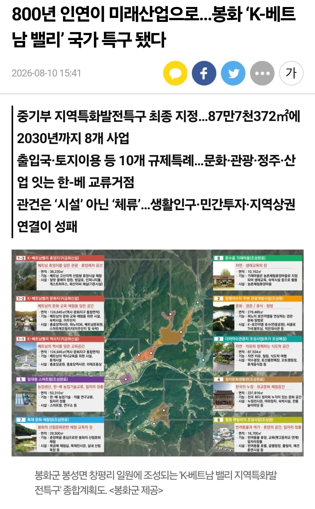
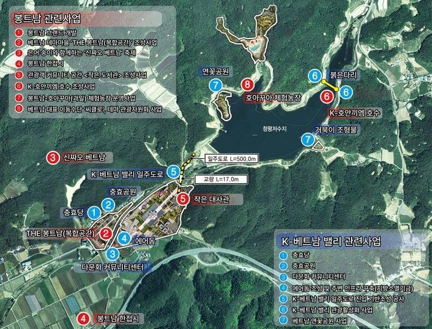
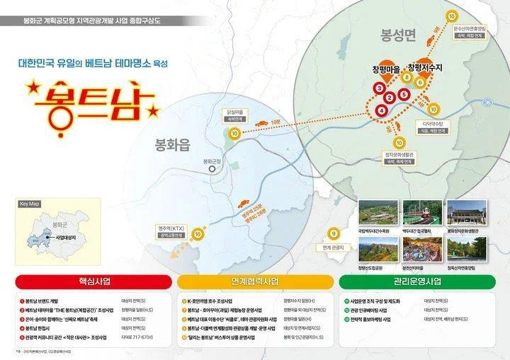

경북 봉화의 ‘K-베트남밸리’가 단순한 지역 관광사업을 넘어 국가 차원의 지역개발사업으로 외연을 넓히고 있다.
출발은 국비 2억 원이었다. 이후 국비 60억 원을 확보했고, 최근에는 3476억 원 규모의 8개 특화사업으로까지 사업의 몸집이 커졌다.
숫자만 놓고 보면 비약적인 성장이다. 그러나 이 과정에서 누가 어떤 역할을 했는지를 들여다보면 한 사람의 공으로 설명하기는 어렵다.
사업을 지역의 구상에 머물게 하지 않고 국가사업의 틀로 끌어올리는 과정에서는 전 박현국 봉화군수의 역할이 눈에 띈다.
박 전 군수는 취임 이후 K-베트남밸리를 봉화의 미래 성장사업 가운데 하나로 구체화하고, 베트남과의 교류 기반을 확대하는 데 힘을 쏟았다. 2022년 베트남 국가주석에게 사업을 건의하고, 이듬해 베트남 뜨선시와 자매결연을 맺은 것도 이러한 노력의 연장선으로 평가된다.
특구는 봉성면 창평리 일원 87만7천372㎡ 규모로 지정기간은 2026년부터 2030년까지다. 기투자액 1천127억원을 포함해 총 3천476억원 규모의 8개 특화사업이 추진된다.
국비 2억 - 60억 - 3476억으로 늘어남.

저거 자세히 보면 정작 베트남 관련 사업은 10개 중 3개 뿐이고
나머지는 그냥 세금으로 토목질하는 거네
심지어 그 3개도 그냥 대충 허접한 테마파크 만들고 끝날 듯
저건 베트남 이전에 그냥 거대한 상설 여수 섬박람회같은 거임